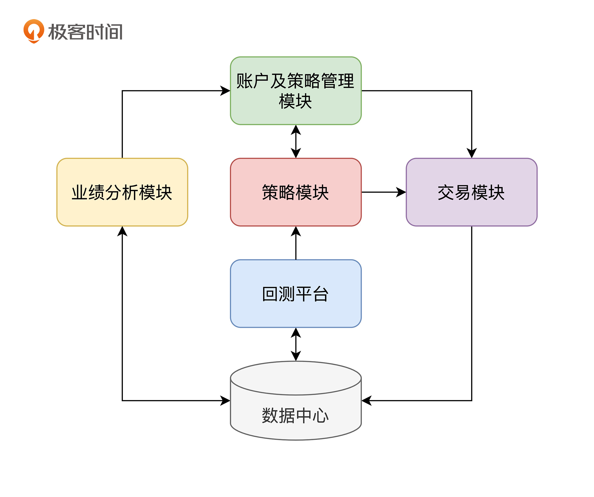

- 00 开篇词 为什么说程序员最适合学财富管理？.md.html
- 01 财富框架：建立属于你自己的财富双塔.md.html
- 02 个人发展：你自己的发展才是最大的财富源泉.md.html
- 03 理财金字塔：如何建立稳固的投资理财结构？.md.html
- 04 实战知识：有哪些收益稳健的经典资产配置组合？.md.html
- 05 支点投资法：主动投资是讲逻辑的！.md.html
- 06 不当韭菜：在财富管理的过程中摆正心态，知己知彼.md.html
- 07 职业方向：如何选择一个有前景的职业方向？.md.html
- 08 职业规划：大公司VS小公司，怎样选择更有前途？.md.html
- 09 期权股权：如何正确处理公司的期权、股权？.md.html
- 10 跳槽涨薪：如何规划一条合理的职业道路？.md.html
- 11 财富拓展：35岁失业？程序员如何拓宽财富渠道？.md.html
- 12 房产投资：如何做出理性的买房决策？.md.html
- 13 实战知识：让我们编程计算下怎么还房贷最合适.md.html
- 14 基金投资：如何让专业人士帮你赚钱？.md.html
- 15 实战知识：如何选出一只优质的基金？.md.html
- 16 股票投资：最适合散户的股票投资方法是什么？.md.html
- 17 投资闭环：如何成为越来越专业的投资者？.md.html
- 18 技术优势：程序员如何用技术超越其他投资者？.md.html
- 19 量化投资：典型的量化投资系统都包含哪些模块？.md.html
- 20 价值投资：永远不过时的中长期投资策略.md.html
- 21 趋势跟踪：怎样跟着趋势一起赚钱？.md.html
- 22 轮动策略：如何踩准市场变换的节奏？.md.html
- 23 对冲思想：这个世界上有稳赚不赔的生意吗？.md.html
- 24 多因子模型：整合不同策略，形成合力的顶层框架.md.html
- 25 机器学习：我们能用机器学习来建立投资模型吗？.md.html
- 26 量化实战：从0到1搭建起一套简单的量化投资系统（上）.md.html
- 27 量化实战：从0到1搭建起一套简单的量化投资系统（下）.md.html
- 番外一 王喆对话李腾：程序员对基金经理的灵魂十问（上）.md.html
- 番外三 有哪些能够持续学习的参考资料和相关网站？.md.html
- 番外二 王喆对话李腾：程序员对基金经理的灵魂十问（下）.md.html
- 番外四 知识总结：这门课的全部思维导图.md.html
- 答疑课堂（一） 财富框架篇、个人发展篇思考题集锦.md.html
- 答疑课堂（二） 投资实战篇、投资进阶篇思考题集锦.md.html
- 结束语 知行合一：财富管理是一生的事情.md.html
- 捐赠
19 量化投资：典型的量化投资系统都包含哪些模块？
你好，我是李腾。今天我跟你讲一讲量化投资系统。
我相信很多程序员朋友看到量化投资，就会觉得眼前一亮。因为量化投资涉及到的数据库、交易接口、高频服务器等模块，可都是程序员们最擅长的领域。随着这些年机器学习在金融领域的逐渐应用，量化交易更是跟算法工程师们的工作紧密结合起来。量化交易似乎成了程序员们实现投资理想最可能的手段。
事实也是这样，之前我在基金公司的时候，就有很多同事是计算机专业背景的。而且据我了解，最近几年有越来越多的程序员们投身到量化私募，特别是机器学习和高频交易领域，并实现了可观的收益。
我自己参与负责过百亿级量化账户和FOF账户管理，在量化投资领域也算是一名老兵了。今天，我就跟你讲一讲，量化投资到底是什么，以及一个经典的量化投资系统都包括哪些主要模块。不过，这只是一个整体的介绍，在下一个模块“投资进阶篇”中，我会带你学习一些具体的量化投资策略，并帮助你将它应用到投资实践中。
到底什么是量化投资？
量化投资，就是利用数据和模型来驱动的投资方式，一般都通过计算机系统实现。在量化投资中，我们会在投资的各个环节使用数学模型。例如，根据金融市场的历史数据建立数学模型，来预测股票等证券未来的涨跌幅，以及它们价格的波动程度、相关性等。再比如，利用量化模型和计算机程序来有效地执行交易，甚至从交易中持续获利。
只从定义上就可以看出，量化投资和程序员的工作有着千丝万缕的联系。量化投资系统的各个模块更是程序员熟悉的领域。我可以先给你举几个例子：
- 以数量化的方式处理行情和交易数据，这需要编程来实现；
- 用程序化的方式发出买卖指令，需要调用和实现诸多API；
- 管理量化投资的机器，实现高频、低延迟的目标，需要大量运维和网络搭建的经验；
- 存储和高效处理交易数据，需要强大的数据库支持；
- ……
可以说，一个完整的量化投资系统，和推荐系统、计算广告系统一样，都是非常复杂的计算机系统。
对于量化投资，程序员有着先天的技术优势。但是，如果你想真正进入这个领域，还是需要补充一些非常专业的投资领域知识的。下面，我就从一个量化投资领域老兵的角度，向你展示一个经典的量化投资系统中的各个模块。
量化投资系统的框架图
下面的图1就是一个典型量化投资系统的框图。我们看到它是由六大模块组成的，分别是账户及策略管理模块（以下简称管理模块）、策略模块、交易模块、回测平台、业绩分析模块和数据中心。

这六个模块分工不同，形成了一个良性的迭代闭环。下面我来一一介绍下。
- “管理模块”是整个系统的管理者，它负责调度所有的模块执行相应的任务，对系统进行顶层的管理；
- “策略模块”是各种投资策略的仓库，你可以把它理解成若干位不同投资风格的投资经理，每位投资经理根据自己的投资信号或模型，生成相应的投资决策；
- “交易模块”是执行者，它负责在接收到“管理模块”或“策略模块”的指令后，调用外部的交易接口，执行具体的交易操作；
- “回测平台”类似于机器学习中的离线测试平台，用于试验各种新策略；
- “业绩分析模块”是裁判，它会公平地评判各个策略的盈亏情况和各个环节的运行情况，把评判结果发给管理模块，让管理者知道哪些策略和环节需要改进；
- “数据中心”就好理解了，它用来存储整个系统的所有交易、回测、持仓和盈亏数据。
接下来，我们就详细看一看各模块的工作。
账户及策略管理模块
首先要讲的是管理模块，因为它是整个系统的绝对领导。这位领导每天都有这么 5 件必须要做的事情：
- 发出各个策略开启和停止的指令；
- 根据业绩分析模块生成的分析报告，调整不同策略的权重和配合方式；
- 分析系统的整体风险，根据顶层风险情况，来决定资金的分配方式；
- 记录不同策略的持仓明细和交易明细，并且负责在策略启动时告知不同策略当前的状态；
- 评估各模块的运作情况，生成运作报告给管理人员。
可以说，管理模块这位领导在时刻评估着系统的整体风险和盈亏情况，掌握着各个投资策略的“生杀大权”。
策略模块
如果说管理模块是整个系统的CEO，那么策略模块就是负责各具体投资策略的投资经理。量化交易团队在策略模块上投入的研发力量是最多的，为什么呢？因为在一个量化投资系统中，策略模块能否准确地预测投资标的的趋势，直接决定了系统盈利能力的高低。
具体来说，策略模块的研发主要分为回测阶段和执行阶段。如果你熟悉机器学习，肯定会觉得似曾相识，因为它像极了机器学习模型的离线训练阶段和在线推断阶段，这二者本质上也确实是相通的。在回测阶段，量化交易员们会在回测平台上验证各种投资想法，找到最佳的策略参数。在执行阶段，策略模块会从交易模块拿到实时数据，并据此生成线上交易的信号。
策略模块所包含的策略可以是多种多样的。一个成熟的量化交易团队，往往会同时运行几种甚至几十种不同的交易策略，以达到系统的整体稳定。策略的种类非常多，我们可以根据投资想法的来源，把它们归入四大类：
- 投资想法类。很多策略可以是由一个简单的投资想法生成的，就像我们上一讲提到的基于日历效应的策略。
- 因子驱动类。投资策略也可以是由一些有价值的因子驱动的，比如技术面上的动量因子、反转因子，以及基本面上的估值因子、成长性因子，等等。
- 交易策略类。当然，更多策略是由一些经典的策略思想细化而来的，比如配对交易、趋势跟踪等。
- 交易模型类。最后这个类别更加复杂，我们程序员熟悉的机器学习、深度学习的模型，就是在这类策略上大显身手的。
听到这里，如果你发现自己对我上面讲的很多名词都一知半解，也不用着急，因为我们的下一个模块“投资进阶篇”就是专门带你去熟悉这些投资策略的。
为了发现能够盈利的交易策略，以私募基金为代表的各大量化投资团队可以说是八仙过海，各显神通，我下面就举两个在量化投资界比较知名的例子，你可以和我一起体会体会，量化团队都是怎么挖掘交易策略的。
第一个例子，是一家业内知名的国际量化投资机构，起家于挖掘股票的技术面因子。具体是怎么挖掘的呢？
这家机构招聘了大量名校毕业生，设置了非常鸡血的激励机制，组织这群高智商员工人肉挖因子。可以说，这些员工把最大的精力和最聪明的才智都投入到了因子挖掘这个事业上，他们不断把各自搜索到的巨大噪音下的微弱规律编制成因子，提交到回测平台上进行评估，然后进行在线实盘检验，只有通过严格考核标准的因子才能入库。靠这样的方法，最终积累了上百万个极有价值的因子，这些因子成为了这家量化投资机构的“金矿”。
另一个例子是一家本土量化私募，他们投入了大量资源搭建计算集群，利用机器学习模型在股票的高频数据中自动挖掘因子。和人肉挖掘比起来，用模型挖因子理论上能够突破人的线性思维局限，也能在市场变化时更快地学到新的模式，同样取得了非常可观的盈利。事实上，机器学习也确实在量化投资的各个环节得到了越来越多的应用。
交易模块
上面讲的策略模块负责的是做出投资决策，而一个决策从诞生到被切实执行，中间是需要一个小心负责的执行者的，这个执行者就是交易模块。
举个例子来说，策略模块这个投资经理发出一个交易指令，说今天收盘前买入贵州茅台10000股。要注意，这笔交易其实是比较大的，一次性下单可能会拉高股价，抬升交易成本，这时候就需要交易模块出马了。
交易模块会按某种算法交易方式拆单，做到全天均匀下单，最终完成计划的交易，并在交易中、交易完成后或收盘后，将券商柜台系统返回的成交记录和持仓明细返回给账户管理系统，用作记录。
对于高频交易系统来说，交易模块会跟策略模块密切配合，不断互相通信，分享行情数据和交易指令；对于中低频的日级交易来说，交易模块的交易指令大多来自于管理模块，由管理模块调用策略模块把全天的交易指令准备好之后，再发给交易模块执行。
在具体实现时，交易模块可以由人工交易员执行（全手动），也可以是人工加简单的算法交易（半自动），还可以是全自动的高频交易模块。具体采用哪种方式，依据的是策略对交易速度的要求。
这里还要注意，如果要实现全自动的交易模块，首先需要调研想要交易的投资标的是否存在程序化交易接口。比如，想要实现国内的期货自动交易，就需要使用期货交易的CTP接口。这就要求团队有较强的工程能力。
回测平台
刚才我讲了策略的线上执行部分，交易模块。而在策略诞生的过程中，还需要大量的离线测试，这就需要用到我刚才提到的“回测平台”。
说起回测这个概念，机器学习工程师们肯定不会陌生，它跟机器学习模型的离线训练和评测过程是一样的。具体的回测过程，就是让交易策略回到每一个历史时点，用这个时点之前的数据作为训练数据，拟合出策略的相关参数，之后根据模型输出的交易信号生成交易指令，然后生成模拟成交记录。当这个历史时点在时间轴上滑动起来时，我们就得到了一个投资组合的整个历史上的每日持仓和交易记录。把这些记录发给下面要介绍的业绩分析模块，就可以计算出组合的净值走势，并评估策略的业绩表现。
回测平台是研发新策略和调试更新老策略的主要工具。投资系统初步搭建完成以后，量化投资团队就把主要的时间投入在使用回测平台研发新的投资策略上。
业绩分析模块
接下来我想要讲的是业绩分析模块。这个模块的任务说起来很简单，就是算账，算清楚一个策略最终赚了多少钱；然后分析结果，并把分析报告反馈给管理模块和投资经理。这些管理者会根据策略的表现，决定是否对这个策略进行调整。
进一步的业绩分析还包括了其他详细的业绩指标，例如年化收益、年化波动、夏普率、最大回撤等等。再进一步，一些优秀量化团队，还可以使用更复杂的业绩分析技术，把业绩归因到具体的环节或因子上。形象点说，就是弄清楚平台赚取或损失的每一块钱，都是由哪些环节贡献或亏损的。例如，预测模型中的每个因子各贡献或损失了多少钱，交易成本损失了多少钱，不同行业的超配和低配的收益贡献是多少，每个行业内的选股的收益贡献是多少，等等。这样更有利于开发人员去发现系统各环节的薄弱点，再加以针对性的改进。
数据中心
最后一个模块是“数据中心”。它装载的不仅有从不同数据源获取的股票、指数、期货、基金的行情数据，还包括从不同渠道获取的基本面数据，比如公司的财报内的关键指数、资产负债表、现金流量表、利润表，行业数据，等等。我们一般把数据中心中存储这类公开数据的数据库叫做基础数据库。
除此之外，数据中心还会保存系统的所有交易行为，包括每个策略做出的交易决策，用于复盘时的业绩归因分析。我们把存储这类交易相关数据的数据库叫做账户数据库。
上面讲的回测平台也是基础数据库的重度使用者，所有的历史行情数据以及交易数据都会保存在基础数据库中。
典型量化投资团队一天的工作是什么？
到此为止，一个典型量化投资系统的六大模块就介绍完了。最后，我还想跟你分享下一个量化投资团队一天的工作，你可以看一看量化投资者们都是如何使用这些模块的。
- 早晨到公司，首先检查基础数据库是否已经从各数据源收齐了最新数据。
- 管理模块根据投资经理的设置，生成当天各投资账户下各个策略的配置方案，投资经理在开盘前复查方案。
- 开盘后，策略模块根据管理模块制定的组合方案，分策略进行预估，不断把交易决策发送给交易模块，交易模块全天持续进行交易。没有意外情况，交易员不参与交易过程。
- 在白天开盘时段内，机器或交易员进行持续交易；策略研究员可以利用回测平台继续研发新的策略或模型；技术人员持续打磨优化其他系统的模块。
- 等到下午收盘后，交易模块会从交易所下载成交明细和持仓明细，将所有账户和策略的明细记录写入账户数据库。
- 记录工作完成后，业绩分析模块将对每个账户进行业绩分析，评估各个执行环节是否正常运行，并生成报告发给各账户投资经理。对于出现问题的环节，投资经理会组织人力投入进行改进。
这就是一个量化投资团队的主要工作。量化投资团队就这样周而复始地优化和改进策略，打磨系统，形成一个良性的迭代闭环，不断提高系统的盈利能力和风险控制能力。
小结
今天，我主要向你展现了一个典型的量化投资系统。最后，我再总结一下这一讲的重点，供你回顾：
- 量化投资，是指基于数据和模型驱动的投资方式，一般都通过计算机系统实现。
- 一个典型的量化投资系统是由六大模块组成的，分别是账户及策略管理模块、策略模块、交易模块、回测平台、业绩分析模块和数据中心。
- 一个量化投资团队的主要工作就是依托量化投资系统，打造一个不断提高系统盈利能力和风险控制能力的良性闭环。
这一讲也是我们投资实战模块的最后一节课了，希望学完这个模块的你，能够掌握好跟普通人最相关的投资标的的基本投资方法。不过，我想肯定有很多同学觉得还不过瘾，希望更进一步，掌握一些高阶的投资策略。
就像这一讲开始时说的那样，我们今天只是对量化投资系统有了一个整体的了解，而它的核心，也就是能够实打实创造收益的策略模块，我们会在投资进阶篇一同学习。从下一讲开始，我和王喆会带你了解专业投资团队的投资理念及主流策略，希望你能用专业的知识武装自己，在财富管理之路上继续升级。
思考题
听这门课的应该大部分都是程序员，那我就提个技术相关的专业问题吧：针对量化投资系统的特点，你觉得量化投资的基础数据库应该选什么比较好？交易模块又该涉及哪些技术呢？
期待在留言区看到你的思考和见解。同时，如果你对这一讲的知识有任何困惑，都可以在留言区提出来，我会一一为你解答。
© 2019 - 2023 Liangliang Lee. Powered by gin and hexo-theme-book.